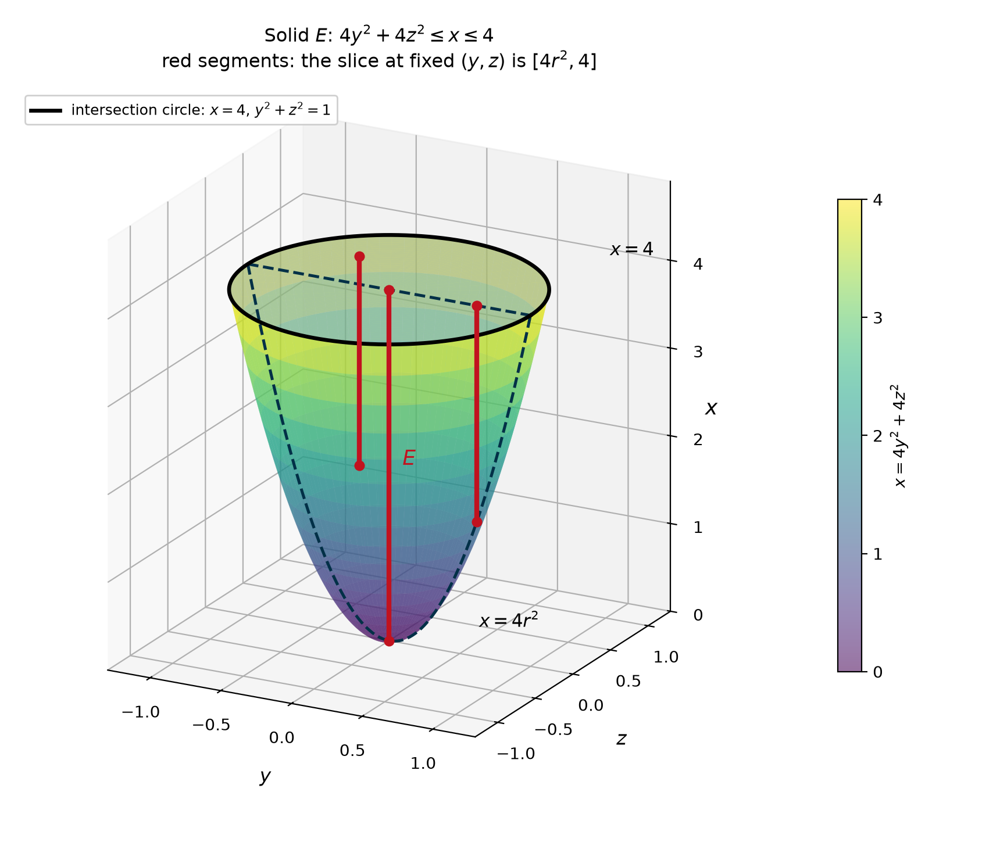
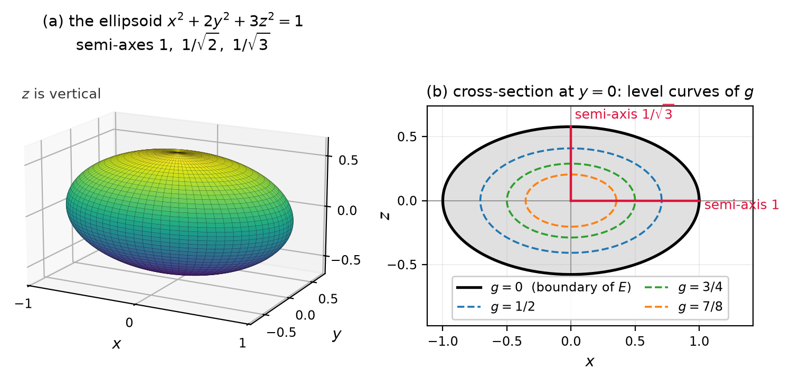
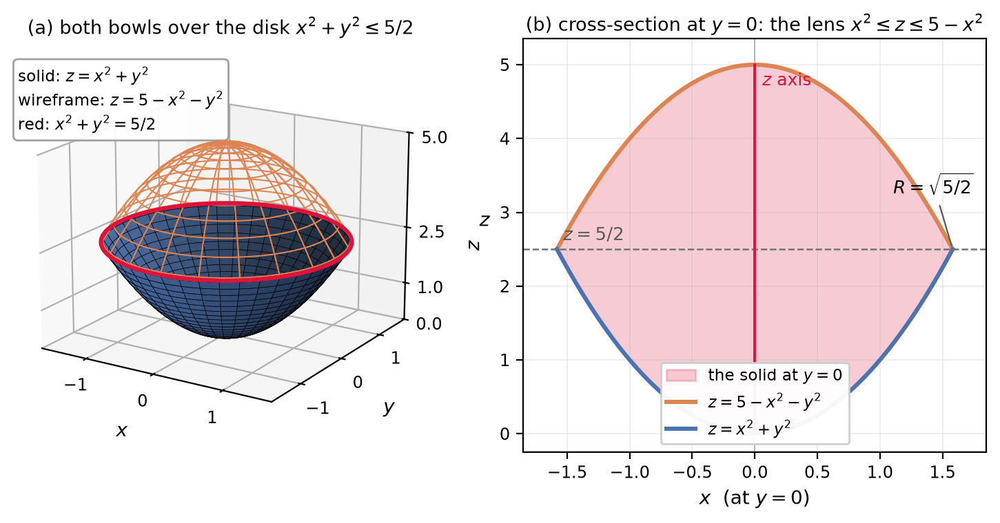
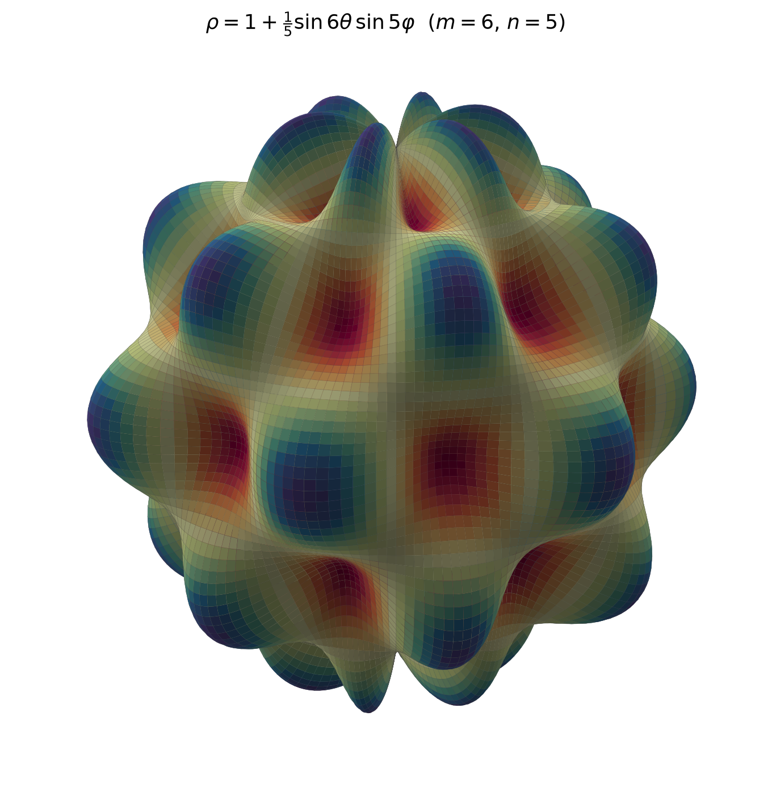

🏁 Result at a glance
📌 The agent made 49 figure PNG files, 49 figure scripts, 79 step scripts, and 24 PDFs. The PDFs total 14.5 MB. Each problem has at least 2 figures.
📌 The parent agent used 10 solver subagents: 8 first-pass agents and 2 redo agents. The 8 first-pass agents each got 3 problems. The two redo agents solved one problem each.
🧬 The run is a reproduction, not a rewrite. The operator used DeepSeek Harness and public plugins to rebuild the functions of the MCMA agents that were built on DeepAgents and LangChain. The operator wrote no new agent code. Each PDF also contains a tutorial section about how to approach similar problems.
🧾 Two records of the same run
📌 The remark file is a short summary. The session log is the machine record. The two records agree on the result, the 76-minute wall clock, and the extra token cost. They use different measures for speed, tokens, and stability.
| Item | Remark file | Session log |
|---|---|---|
| ✅ Solved | 24 / 24 | 24 / 24 PDFs are present |
| ⏱ Wall clock | 76 minutes | 76 minutes from the first subagent launch to the last finish |
| 🐢 Speed | “3 times slower than the original MCMA” | 76 minutes; the MCMA reference is 81.5 minutes; 8 subagents run in parallel |
| 🪙 Token load | “burns 3 times the tokens used by the original MCMA” | 236.4M recorded tokens; 97.3% are cache reads |
| 💰 Cost | Not stated | $3.77; 3.1 times the MCMA peak-hour cost |
| 🧠 Process | “All solutions are detailed and computationally verified.” | 2,298 steps; 2 redo agents; 95.8 steps per problem |
| 📚 Teaching | “Solutions also include tutorial contents about how to approach similar math problems.” | Every solution has a teaching section; prompt rule 7 requires it |
| 🛡 Stability | 1 crash (out-of-video-memory) | 1 crash and 1 freeze; both recovered |
💡 Why the token counts differ from the remark. The DSH total counts every cache read. The earlier MCMA total also includes cache reads, but the DSH agent sends much more context. The raw token total is 10.6 times larger. The cost is 3.1 times larger. The output token total is 2.5 times larger. The 3-times claim in the remark matches the cost factor.
🐢 Why the speed claim needs a note. The remark file says the agent is 3 times slower. The recorded wall clock does not show a 3-times slowdown: DSH finishes in 76 minutes, and the MCMA reference takes 81.5 minutes. DSH runs 8 subagents in parallel. The remark file attributes the extra work to the DSH PowerShell support. Recurring command-exception cycles cause a retry at each step. The token and cost totals show the extra work. The wall clock does not show it, because many subagents run at the same time.
🪙 Where the tokens went
📌 The session recorded 236,381,391 tokens. Cache reads are 229,987,072 (97.3%). New input is 4,673,799 (2.0%). Output is 1,720,520 (0.7%). The agent re-sends the full context at each step, so cache reads dominate.
🪙 Chart 1 — Token mix. Cache reads, new input, and output.
🔄 Chart 2 — Steps per agent. The parent does the planning. The subagents do the math.
🪙 Chart 3 — Recorded tokens per agent, in millions. The redo agents are amber.
⏱ Time and parallelism
📌 The first 8 subagents start together at about 13:43. The first pass ends at 14:22. The two redo agents start at 14:29 and end at 14:59. The parent session runs from 13:30 to 15:14 and includes setup, one crash, and one freeze.
⏱ Chart 4 — Solve windows in minutes after 13:30 (Asia/Shanghai). Blue: first pass. Amber: redo. Green: parent wall clock.
⚠ The remark file records one crash. The cause is an out-of-video-memory error. The remark file says too many concurrent LaTeX compilation processes cause it. The session log also records a parent freeze while it read job output. The operator restarted the run after the crash and told the agent to continue after the freeze. The 76-minute solve window includes the crash recovery.
🐢 The extra work has a platform cause. The remark file says the DSH PowerShell support is bad. It causes recurring command-exception cycles. Each cycle costs a retry. The run uses 3 times the tokens of the MCMA baseline, and the cost is 3.1 times the MCMA peak-hour cost. The wall clock stays near the baseline value because 8 subagents run in parallel. The Future Plans chapter gives the fix: dsh-gitbash-new, Git Bash, and MSYS2.
📋 Solver groups
📌 The table uses the 10 solver subagents plus the parent and the Explore subagent. Minutes are from the subagent start to its last message. The parent row is wall clock and overlaps all other rows.
| Agent | Problems | Steps | Minutes | Tokens (M) | Cost (USD) |
|---|---|---|---|---|---|
| 🤝 15.7.17–20 | 3 | 279 | 29.6 | 28.49 | 0.4018 |
| 🤝 15.7.21–23 | 3 | 122 | 18.9 | 11.52 | 0.1563 |
| 🤝 15.7.27–29 | 3 | 262 | 30.1 | 29.35 | 0.3519 |
| 🤝 15.7.30–32 | 3 | 157 | 37.6 | 12.27 | 0.2152 |
| 🤝 15.7.39, 40, 46 | 3 | 218 | 22.1 | 24.23 | 0.2047 |
| 🤝 15.7.47, 49, 50 | 3 | 136 | 25.9 | 12.60 | 0.2293 |
| 🤝 15.7.54, 55, 15.8.14 | 3 | 315 | 38.9 | 34.20 | 0.4383 |
| 🤝 15.8.26, 15.9.43, 15.9.45 | 3 | 227 | 28.2 | 23.66 | 0.3289 |
| 🔄 15.7.31 redo | 1 | 144 | 23.6 | 12.87 | 0.3827 |
| 🔄 15.7.32 redo | 1 | 226 | 29.9 | 29.33 | 0.6277 |
| 🧩 Parent orchestration | — | 195 | 103.8 | 17.34 | 0.4198 |
| 🔍 Explore check | — | 17 | 2.3 | 0.51 | 0.0098 |
📌 The 15.7 set has no exercise 19. The group 15.7.17–20 covers 17, 18, and 20. The two redo rows repeat 15.7.31 and 15.7.32, so the Problems column sums to 26 agent assignments for 24 unique problems.
📌 The 10 solver agents total 2,086 steps. The parent and the Explore agent add 212 steps. The total is 2,298 steps.
💰 Comparison with the earlier MCMA run
📌 The reference is the (MCMA+)deepseek-flash run in dev-logs-20260929. It also solved 24 of 24 problems. The DSH run costs more and uses more steps. It also draws more figures and keeps a full LaTeX source tree.
| Configuration | Solved | Steps | Recorded tokens | Cost (USD) | Wall time |
|---|---|---|---|---|---|
🤖 DSH standard mode, deepseek-flash | 24 / 24 | 2,298 | 236.4M | 3.77 | 76 min |
🧩 MCMA, deepseek-flash | 24 / 24 | — | 22.3M | 1.20 peak / 0.60 off-peak | 81.5 min |
💰 Chart 5 — Cost per solved problem. DSH is about 3.1 times the MCMA peak-hour value.
🪙 Chart 6 — Recorded tokens per solved problem. DSH re-sends much more context.
💡 The DSH run is not cheaper. It is more thorough. It keeps step scripts, figure scripts, figures, LaTeX sources, and compiled PDFs. The earlier MCMA run writes a final result file and figures.
📈 Visual check
📌 These four figures come from the final DSH folders. They show the requested geometry, the cross-sections, and the labels. Click a figure to zoom.




⚠ Problems found and fixed
🛠 The run had one crash, one freeze, and one bad figure
- OOM crash, 1 time. The OS stopped because of out-of-video-memory. The remark file says too many concurrent LaTeX compilation processes cause it. The operator restarted the run and told the agent to continue. The agent continued from the saved state. The plan is to drop full LaTeX support and use Typst with mitex for LaTeX math expressions. See Future Plans.
- Parent freeze. The parent stopped while it read job output. The operator told it to continue.
- Bad figure in 15.7.32. A QA pass found that
part1_figure1.pngwas a 353-byte text stub. The agent replaced it. The parent also started a new single-problem agent for 15.7.31.
📌 The two redo agents added 42.2M tokens and $1.01. The final set still has all 24 PDFs and 49 figures. The remark file also records the PowerShell overhead: recurring command-exception cycles add tokens and time to each step. The next run will use Git Bash through dsh-gitbash-new and MSYS2.
📌 Bottom line
- 🧬 Reproduction. The run rebuilds the MCMA functions on DeepSeek Harness with public plugins. The operator wrote no new agent code.
- ✅ Reliability. The standard agent solved all 24 problems. The run recovered from one OOM crash and one freeze.
- 🔄 Effort. The agent uses 95.8 steps per problem. It checks each deduction and each figure again and again. This makes the process slow and is the main source of cost.
- 📚 Teaching. Each solution is detailed, verified by Python, and includes tutorial content for similar problems.
- 📈 Output. The run gives 49 figures and 24 PDFs (14.5 MB). The figures are clear and labeled.
- 💰 Cost. The run costs $3.77. This is 3.1 times the earlier MCMA peak-hour cost for the same success rate.
- 🐢 Overhead. The remark file reports 3 times the tokens and 3 times the time. The cause is the DSH PowerShell support. The plan is Git Bash, MSYS2, and
dsh-gitbash-new. See Future Plans.